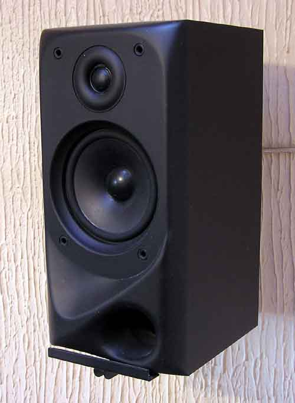

From soloists to ensemble
Giorgio Sironi - Tech Lead Manager @ eLife
(if you're reading this on your laptop, press S for notes)
Tech Lead Manager
Problems I work on
Finding out the right piece of software to build, then build it
Give enough challenges to people
Growing enough basil and parsley
I search for the harmony between form and context, which is a fancy way of saying I build software to fit in the world I'm in and all the forces around it. Over the years, I started contributing to building the team and the process as well, as they are the conduit to achieve something we can't do alone.
Metaphors
There are some concrete rules to follow when practicing ensemble programming. But even if we were to work all together on a piece of code during this talk, it might not get across the spirit behind them that makes them powerful, and adaptable to new contexts.
All the brilliant people working on the same thing, at the same time, in the same space, on the same computer. -- Woody Zuill
There are some constraints placed on a group of people to say they are working as a mob. They must be working on the same piece of software. They must be working in the same hours. They must be in a space where they can communicate synchronously with each other. And, given how linearizable committing code is, they should all work on a single working copy of a repository at a time.
For an idea to go from someone’s head into the computer, it must go through someone else’s hands. -- Llewellyn Falco
Driver: Hands
Navigators: Heads
Designated Navigator: Voice
Being together doesn't necessarily lead to a productive result without building in some facilitation rules. To make everything that happens explicit and visible, it can be agreed by the group and verbalized to someone else. A (often quickly) rotating Voice connects the Heads to the Hands.
Credits
Where do these names come from? A rally driver taking instructions from a navigator on where to steer or how fast they can go.
Credits
Mob programming is an established term, but it has often heard negatively - no one wants "the mob" to help them solving their problems.
When there is a big fire to fight, or a difficult problem to solve, often group of cross functional group starts to swarm against the problem. This name does not consider the facilitation rules of drivers and navigators though.
Credits
A metaphor that is seen a wider usage nowadays is that of a musical ensemble. People have (overlapping) specialties. They must all be playing together in the same space at the same time and with great harmony for a good result that is more than what each of them could achieve alone. And this is different from an orchestra that has a conductor as a single point of failure.
Credits
Moreover, navigating and writing code are only a couple of the things that happen in an ensemble. Whether we realize it or not, we are often playing various roles that are not producing code directly. For example, a Nose notices smell in the code; an Archivist takes notes in an architectural diagram or TODO items for later; a Sponsor makes less loud voices heard.
The remoteness of it
How do the roles are incarnated in the context of remote work, everyone in the ensemble collaborating from a different location? Everyone is on equal footing; no hybrid 2 people in a room and 2 people remote as it complicates communication
is sharing their screen
has the only keyboard and mouse
uses their favourite IDE, setup, and chair
might not see all faces
is explicitly collecting group input
Does anything really change for the Navigator?
is representing decisions and tasks with infinite number of digital post its of any color and size on an infinite whiteboard
observes people through webcams
explicitly calls onto a next person to talk if they haven't yet
Digital-only: shared across the ensemble, open to real-time collaboration, infinite in size, infinite post its, heterogeneous (screenshots and icons and text and post its), lowest friction to represent tasks/options/decisions visually

Overlapping voices
contention of the single audio medium is possible
--- corollary: someone might hear overlapping voices where you don't. Experience is even more personal
-- no side conversations; impacting workshops rather than ensemble/navigator work
The theory
Or fancy names given to the patterns and practices that emerge, or are elicited, by ensemble programming.
-- continuous code review over rework on feature branches
-- widen bus factor* (negative connotation) over knowledge silos
From Scatter-Gather...
to One-Piece Flow
multiple contributions for a better result over not stepping on each other's toes
-- how to work outside the mob? research and spikes, summarize knowledge to bring back
Thanks for your attention!

 Credits
Credits
 Credits
Credits
.jpg){kind=link}
 Credits
Credits